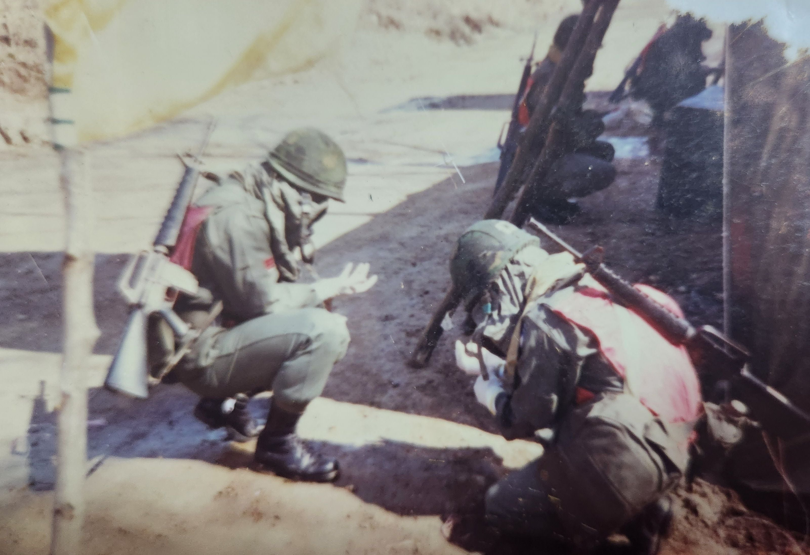
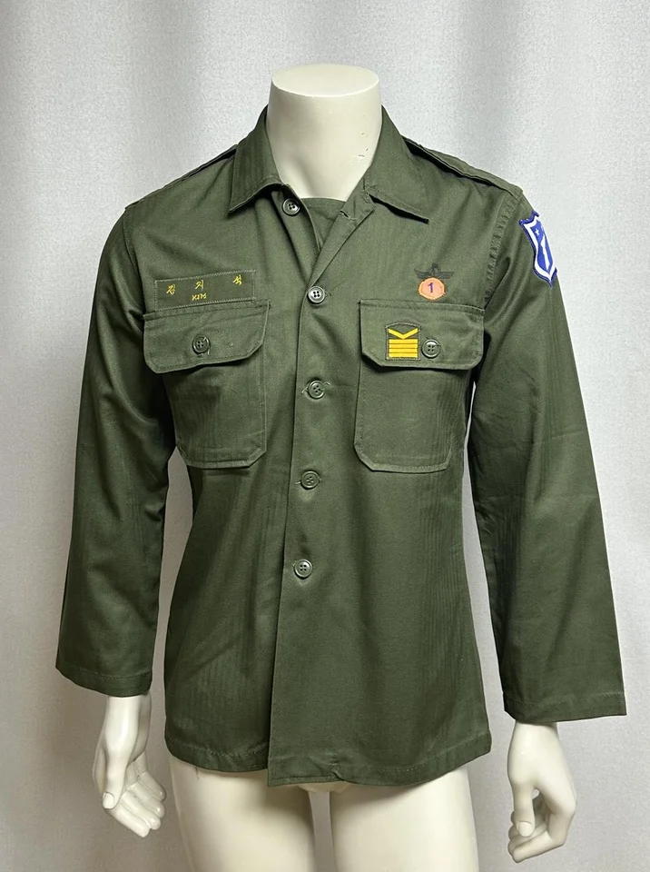
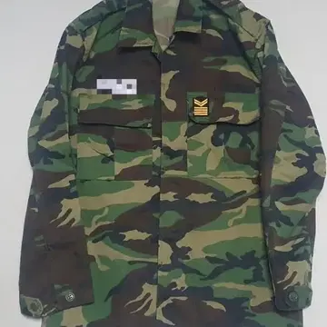
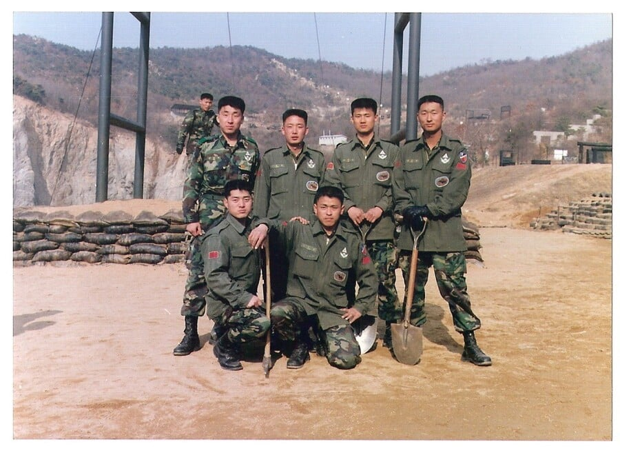
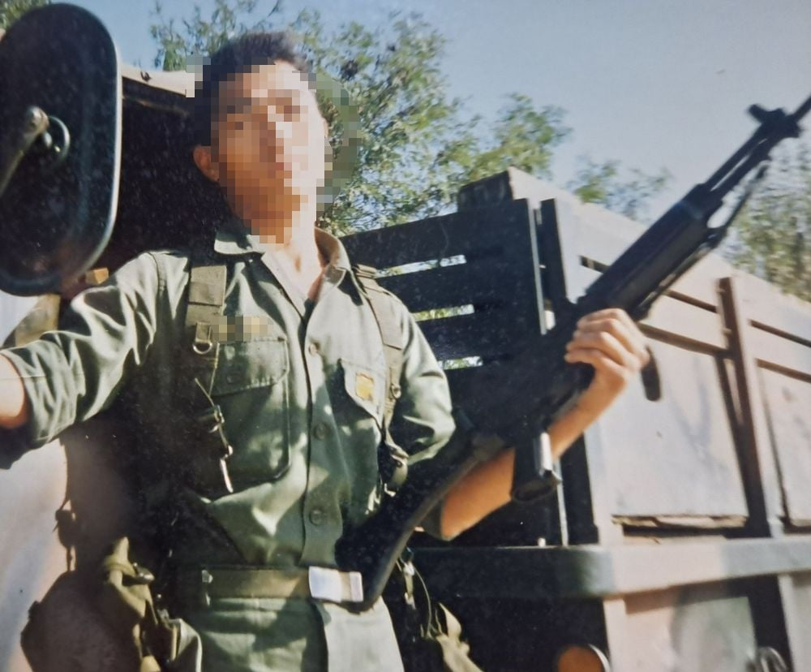

89군번 백두산부대 출신이신 아버지한테 있었던 일임.

당시 아버지는 전역을 앞둔 말년 일반하사였는데....
당연히 민무늬 전투복을 입고 다니셨음...

그런데 언제부턴가 전입온 신병들이 '얼룩무늬 전투복'을 입기 시작한데다

아버지를 포함한 말년급을 제외하고 병장들도 얼룩무늬 전투복을 지급받게 됐음.
아버지는 처음에 '왜 우리한텐 보급 안하냐?'는 불만이 있었는데...

(본인 아버지)
짬찌나 병장이나 가릴것 없이 얼룩무늬 전투복 지급받아서 좋아 죽는걸 보고
"신형 군복이 좋으면 실컷 좋아해라 이 새끼들아. 난 집에 간다."
이런 말을 남겼다고 함 ㅅㅂㅋㅋㅋㅋㅋㅋㅋ
댓글
수집 당시 댓글 23개
유아학교 · 1 시간 전
센치해요 · 1 시간 전
순라면진한맛 · 1 시간 전
민무늬 군복이 깐지남
· 포도음료 · 59 분 전
ㄹㅇ CS복으로 입어봤는데 물빠져서 지랄났는데 좀 멋깔났었음
포도음료 · 59 분 전
디지털 군복 보급은 ㄹㅇ 문제좀 있었지
베레모랑 야상만 디지털이고 얼룩무늬 입은 혼종이 자대배치 받게됨 ㅋㅋ
그러다가 12군번 이후인가 뭐더라 짬찌들만 디지털 전투복이 보급되었는데 야상이 보급안됨 ㅋㅋㅋ
당직사령이 복장통일이 규정인 군대에서 이정도로 난잡한광경은 처음본다고 했나 그런소리했었음
1사단이라 우선 보급된걸로 아는데 ㅅㅂㅋㅋ
· 맘보 · 58 분 전
비 군대사진만 봐도 뭔 개구리전투복에 베레모에 신형야상에 존나 개혼종으로 입음 ㅋㅋ
딱 11 12군번쯤이 신형전투복 과도기라 존나 혼란했던듯
· MOOND · 53 분 전
후방은 12군번 끝날때 보급되었는데
나는 디지털이 이뻐서 전역모도 디지털로 맞췄는데 갑자기 반납으로 바꿔서
디지털 전역모+디지털 야상+개구리 전투복
디지털 전투화
이딴 조합으로 전역함
예비군 갈때마다 쪽팔렸어
· 도플갱어2 · 49 분 전
난 13인데 내 기수가 디지털 하계전투복 첫 초도보급기수였어서 자대갔을때 선임들이 존나신기해했었음ㅋㅋㅋ 이게 여름옷이야? ㅈㄴ 얇네? 하면서 겁나 만져봄
· 나아파치킨사줘 · 5 분 전
내 딱 그맘때였는디 11군번 12월
메모쟝 · 59 분 전
어~ 뺑이쳐라
Lvofpp · 59 분 전
ㅋㅋㅋㅋㅋㅋㅋㅋㅋㅋ
얍의행정 · 58 분 전
초기 디지털은 통풍도 안되서 상말.병장들은 절대로 안입었다고 하던데
평정이후암전 · 57 분 전
얼룩무늬 군복이란건 입어본적이 없다. 남자라면 국방색이지.
맘보 · 56 분 전
신형전투복세대인데 우리때는 신형전투복 하복 안줘서 여름에 진짜 존나 더웠음
박샤붐 · 56 분 전
내가 11년군번인데 신형전투복보고 딱 저말하고 제대함ㅋㅋㅋ
· 애널키스 · 45 분 전
ㅋㅋ 신병들 자대올때 보급도 이상하게 받아서 위아래는 개구리인데 모자는 베레모고 개 혼종이였음
Mojom · 56 분 전
민무늬 군복은 남성복 일상으로 스며들정도로
지금도 많이 퍼져있쟈
머싯듬
스톡홀름신드롬 · 50 분 전
저때 야상 가지고 나왔으면 지금 빈티지 일상복으로 입어도 될듯
글렌모렌지시그넷 · 48 분 전
1종 창고였나 어디 깠더니 민무늬 전투복 대량으로 나와서 정비복으로 쓴 기억이 남
근데 아무리 빨아도 곰팡이 냄새 안빠져서 갖다버렸던 기억이...
언니는살아있다 · 47 분 전
진짜 혼파망은 02~05무렵이었음
오리지날 오렌지
남색 태권V
두번째 오렌지
이 세가지 활동복이 혼재했던 시기임
· 버스터머신 · 11 분 전
맞음 그때랑 그다음 대격변이 12년쯤 무늬 바뀔때
노엘갤러거스하이플라잉버즈 · 46 분 전
00년대쯤 까지 해군 훈련소 전투복은 민무늬였다더라ㅋㅋㅋㅋㅋ 디지털 전투복이 도입된 10년대에는 훈련소에서 입는 전투복이 개구리였고ㅋㅋㅋㅋㅋㅋ
나도 2014년도에 전역용으로 개구리 전투복 재활용피복 세트 제일 깨끗한걸로 구해놨었는데 결국 페인트칠하면서 다 날림ㅅㅂ
어디봐봐 · 1 분 전
영포티 수문장들 통발이하는 글이네 ㅋㅋㅋㅋㅋ